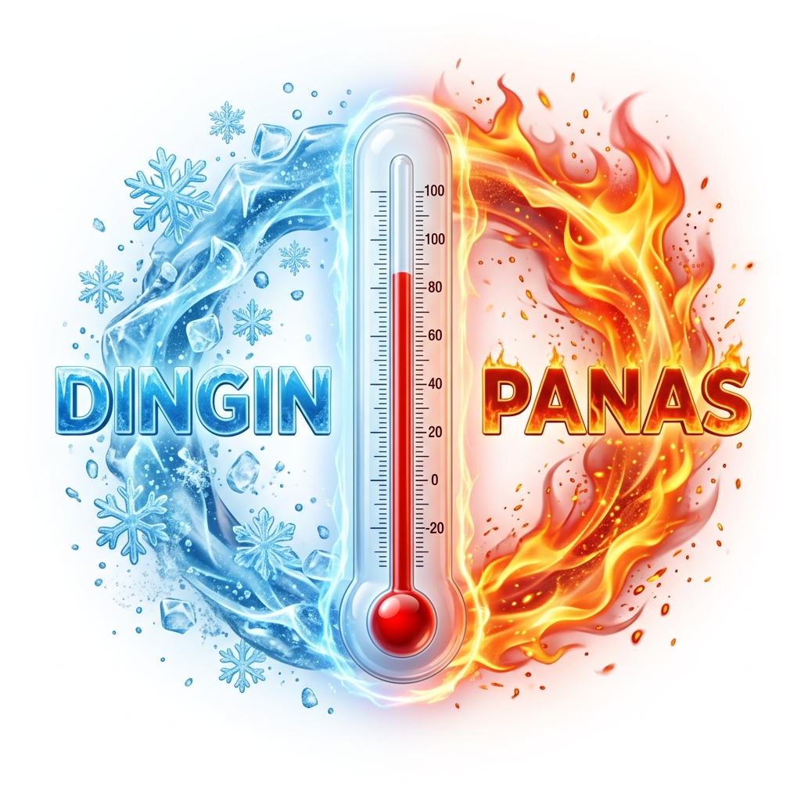
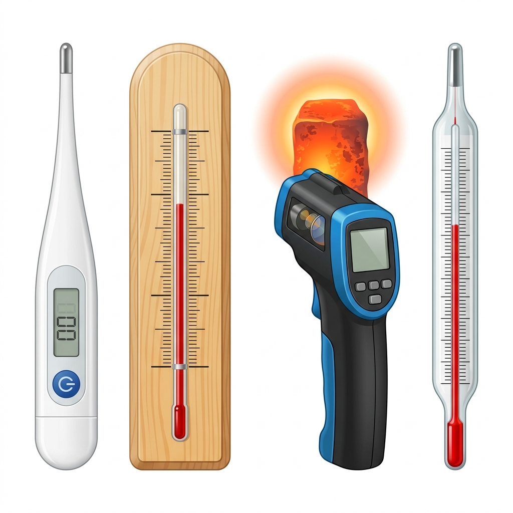
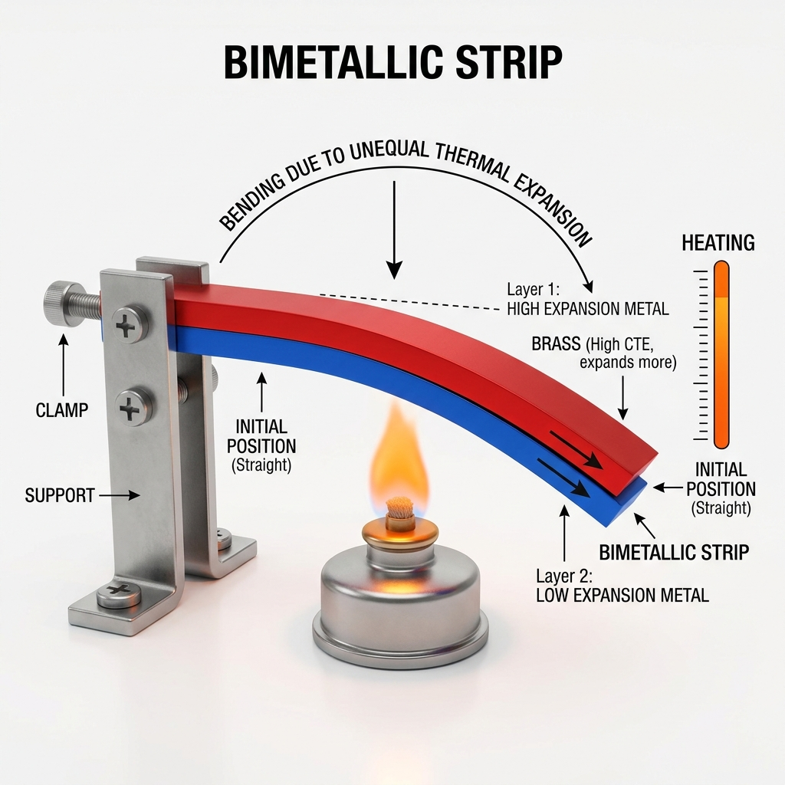

Suhu, Pemuaian, dan Kalor
Memahami konsep dasar termodinamika, alat ukur suhu, perbandingan skala, serta pengaruh panas terhadap perubahan wujud zat.
A. SUHU
1. Pengertian Suhu
Suhu merupakan suatu besaran pokok yang menyatakan ukuran derajat panas atau dinginnya suatu benda. Satuan suhu dalam Sistem Internasional (SI) adalah Kelvin (K).
Indra perasa dapat merasakan panas dan dingin, namun bukan alat ukur yang andal karena hanya menghasilkan ukuran kualitatif. Suhu harus diukur secara kuantitatif menggunakan alat ukur bernama termometer.

2. Termometer

Jenis Termometer Umum:
- Klinis: Mengukur suhu badan.
- Dinding: Mengukur suhu ruangan.
- Six-Bellani: Mengukur suhu tertinggi & terendah.
- Pyrometer: Mengukur suhu sangat tinggi (>1000°C).
Macam Termometer Berdasarkan Zat Pengisi
Raksa (Hg)
- Mengkilap (mudah dilihat)
- Perubahan volume teratur
- Tidak membasahi kaca
- Jangkauan luas (−40°C s.d. 350°C)
- Harga mahal & Beracun
- Tidak bisa ukur suhu sangat rendah
Alkohol
- Perubahan volume besar (lebih teliti)
- Bisa mengukur suhu sangat rendah
- Titik didih rendah (78°C)
- Tidak berwarna (perlu pewarna)
- Membasahi dinding kaca
3. Skala Suhu dan Perbandingannya
Ada 4 skala termometer yang sering digunakan, masing-masing memiliki jumlah skala berbeda antara titik beku dan titik didih air (1 atm):
Perbandingan Jumlah Skala (C : R : F : K)
*(F dikurangi 32) dan (K dikurangi 273)
Rumus Konversi Suhu Praktis
Dari Celcius (C)
Dari Reamur (R)
PEMUAIAN
1. Pemuaian pada Zat Padat
Zat padat akan memuai atau mengembang jika dipanaskan dan menyusut jika didinginkan. Pemuaian dan penyusutan terjadi pada semua bagian benda, yaitu panjang, lebar, dan tebal benda tersebut.
a. Pemuaian Panjang
Suhu yang tinggi menyebabkan atom dan molekul penyusun logam akan bergetar lebih cepat sehingga logam akan memuai ke segala arah. Besar pemuaian panjang suatu zat padat adalah:
- ΔL = pertambahan panjang (m)
- L₀ = panjang mula-mula (m)
- α = koefisien muai panjang (/°C)
Trik Hitung Cepat:
1. Abaikan nol di depan α (ambil angka hidupnya).
2. Kalikan semua angka: L₀ × α × ΔT.
3. Geser koma ke kiri 6 kali. Selesai!
b. Pemuaian Luas
Apabila suatu benda berbentuk lempengan dipanaskan, terjadi pemuaian pada kedua arah sisi-sisinya. Besar pemuaian luas pada suatu zat padat adalah:
- ΔA = pertambahan luas (m²)
- A₀ = luas mula-mula (m²)
- β = koefisien muai luas (/°C)
c. Pemuaian Volume
Pemuaian volume terjadi pada benda 3 dimensi. Apabila benda dipanaskan maka panjang, lebar, dan tinggi akan mengalami pemuaian. Besar pemuaian volume pada zat padat adalah:
- ΔV = pertambahan volume (m³)
- V₀ = volume mula-mula (m³)
- γ = koefisien muai volume (/°C)
2. Pemuaian Zat Cair dan Gas
Zat cair dan gas juga mengalami pemuaian jika dipanaskan. Zat cair dan gas hanya mengalami pemuaian volume saja dan tidak memiliki pemuaian panjang maupun luas.
4. Masalah Akibat Pemuaian
- Kaca jendela bisa retak jika memuai terkena panas, sehingga bingkai kaca dibuat sedikit lebih renggang dari ukuran kacanya.
- Jika sambungan rel kereta tidak diberi celah, maka pada siang hari bagian rel yang terkena panas akan melengkung.
- Rangka jembatan besi bertambah panjang saat panas. Dibuatkan celah agar bisa bebas memanjang/memendek.
- Kabel telepon/listrik di jalan dipasang kendor (melengkung) di siang hari agar saat udara dingin di pagi hari kawat tersebut tidak putus karena menyusut.
Celah pada rel kereta api difungsikan sebagai ruang muai
3. Manfaat Pemuaian
a. Pengelingan Pelat Logam
Paku keling yang sudah dipanaskan hingga membara digunakan untuk menyambung dua pelat logam. Pada saat dingin kembali, paku menyusut dan kedua pelat dapat tersambung sangat erat.
c. Pemasangan Roda Baja Lokomotif
Poros roda lokomotif lebih besar dari ukuran lubang ban rodanya. Oleh karena itu, ban roda dipanaskan hingga memuai, kemudian poros dimasukkan. Saat kembali dingin, ban roda tersebut akan menjepit poros dengan sangat kuat.
b. Pembuatan Keping Bimetal
Merupakan dua keping logam yang berbeda koefisien muai panjangnya yang dikeling menjadi satu.
Jika dipanaskan: keping melengkung ke arah sisi logam yang koefisien muainya lebih kecil.
Jika didinginkan: keping melengkung ke arah logam yang koefisien muainya lebih besar.
Aplikasi keping bimetal memegang peran penting pada saklar termal otomatis, termostat bimetal (setrika otomatis), alarm kebakaran otomatis, dan lampu sein pada mobil.

Sensor Bimetal bekerja menggunakan perbedaan pemuaian